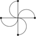

Wallpaper groups
In addition to dihedral groups, cyclic groups as well can be symmetry group of particular figures like the following:
The symmetries that take this figure into itself are the four rotations of: 0, π/2, π and 3π/2 radians.
Not every finite group can be considered a symmetry group of a figure in the plane. We shall show that the only such groups are dihedral groups and cyclic groups. The set of symmetries of the plane forms a group which is E2, the Euclidean group. Traslations are a subgroup, T of E2, and the subset made by rotations with respect the origin and reflections about lines passing through the origin form a subgroup known as orthogonal group, O2, which as we already seen is composed by orthogonal matrices. The subgroup O2 represents the stabilizer of the origin with respect to the natural action of E2 on the plane. The subgroup of rotations of O2, is the special orthogonal group SO2 composed by orthogonal matrices with determinant equal to 1. Every planar isometry is either a rotation followed by a traslation or a reflection followed by a traslation, as the following figure shows:
We shall now classify the subgroups of O2. The following theorem holds:
Theorem 17.19.1 Any finite subgroup of O2(R) is either a cyclic group or a dihedral group, that is either Z
Proof. Let G a non-trivial subgroup of O2. Suppose G is completely contained in SO2, i.e composed entirely by rotations. Let Rφ the matrix representing the counter-clockwise rotation of φ radians, with 0 ≤ φ < 2π. Let Rμ ∈ G such that μ is positive and the least possible angle (such an angle exists since G is finite). For G = SO2, every single real in [0, 2π) occurs, and there is no smallest angle. Since G is a finite proper subgroup of SO2, it posseses the element Rμ, defined above.
For any Rφ ∈ G there exists an integer k such that kμ ≤ φ < (k + 1) μ. But then Rφ − kμ = Rφ ∘ (Rμ)−k is in G, and it results 0 ≤ φ − kμ < μ. In order to respect the minimality of μ, it must result φ − kμ = 0, that is Rφ = (Rμ)k. G is generated by Rμ, and hence cyclic.
Suppose now that G is not contained entirely in SO2 and let N = G ∩ SO2. Since N is composed by matrices of G with determinant equal to 1, its index is |G/N| = 2 (|O2(R) : SO2(R)| = 2, consider that N is just rotations, taking a reflection from g we get a pure reflection r = gn), and for the first part of the theorem it is cyclic. Let R be a generator of N, and let S an element S ∈ G \ N; S represents a reflection i.e. S ∈ G with det(S) = −1, and thus has order 2. If R = I, then G consists of the only elements I and S, and it is thus cyclic of order 2. Otherwise, let n ≥ 2 the period of R then G has the following elements:
{I, R, R2, ..., Rn − 1, S, RS, R2S, ..., Rn−1S}
with Rn = 1, S2 = 1 and SR = R−1S. G is thus the dihedral group Dn. □
Proposition 17.19.2 A finite subgroup of SO3 is isomorphic to either a cyclic group, a dihedral group or the rotational symmetry group of one of the regular polyhedra (Platonic solids) of which there are only five: the tetrahedron, cube, octahedron, dodecahedron, and icosahedron.
We shall now classify Wallpaper groups which are symmetry groups in the plane, of figures which repeat indefinitely. As we have studied every isometry of the plane is characterized by a pair (v, A) where v ∈ ℝ2 represents the translational vector and A ∈ O2 is the orthogonal matrix corresponding to either a rotation o reflection. Recall that if g = (v, A), then
g(v) = v + fA(x) = v + x At
for all v ∈ ℝ2. We define following map
π E2 ⟶ O2
π((v, A)) := A
such a map is a group homomorphism, as it can be easily verified.
π((v, A) (v1, A1) = π(v + fA(v1, AA1)
= AA1
= π(v, A) π(v1, A1)
The kenerl of π consists of all isometries of the form (v, I), that is of all translations. Let G a subgroup of E2 and let
H =: G ∩ T, J =: π(G)
H is named as translation subgroup of G and J the point group or crystallographic group of G.
Here is a precise descritpion of the groups we want to classify
A subgroup of E2 is a wallpaper group if its translation subgroup is generated by two independent translations and its point group is finite.
Definition 17.19.3 We define the lattice L generated by two vectors v and w as the set consisting by all linear combinations
mv + nw, with m, n ∈ ℤ.
Let O(0) the orbit of the origin of ℝ2, under the action H; O(0) contains surely two independent vectors. We pick a non-null vector a of minimum lenght in O(0) and a vector b in O(0) of minimum lenght among all thos not parallel to a.
Proposition 17.19.4 The orbit O(0) coincides with the lattice L generated by a and b.
Proof. Clearly L is contained in O(0) since O(0) is a subgroup of ℝ2 containing a and b. We shall show there cannot be an element x in O(0) but not in L.
Vector x belongs to a parallelogram of L. Let v the vertex of a parallelogram wich is as close as possible to x. The the vector x − v is not the zero vector, is not equal to a and b and its lenght is less that |b|. Since x and v belong to O(0), then x − v belongs to O(0) as well. We cannot have |x − v| < a since a is supposed to be of minimum lenght in L. On the other hand, if |a| ≤ |x − v| < |b|, then x − v must be skew to a and contradicts our choice of b Therefore, no such point x can exist and O(0) ≡ L. □
According to the shape of the basic parallelogram determined by the vectors a and b, we shall calssify lattices into five different types.
Indeed, by replacing if necessary b by −b, to ensure that
|a −b| ≤ |a + b|
With this assumption the different lattices are defined as follows
Oblique: |a| < |b| < |a −b| < |a + b|
Rectangular: |a| < |b| < |a − b| = |a + b|
Centred Rectangular: |a| < |b| = |a − b| < |a + b|
Square: |a| = |b| < |a − b| = |a + b|
Hexagonal: |a| = |b| = |a − b| < |a + b|
Proposition 17.19.5 The order of a rotation in a wallpaper group can only be 2, 3, 4 or 6
Proof. Every rotation, R, in a wallpaper group has finite order because the point group is finite. Let n the order of R then the rotation matrix is
Let a a non-zero vector of minimum lenght in L. Then the vector R(a) which is the vector a rotated by R is in L. Suppose n is greater than 6. Then 2π/n is less that 60° and R(a) − a would be shorter than a, contradicting the minimality of a. If n is equal to five the angle between R2(a) + a which lies also in L is shorter than a, and again we have a contradiction. □
Corollary 17.19.6 The point group of a wallpaper group is generated by a rotation through one of the angle 0, π, 2π/3, π/2, π/3 and possibly a reflection.
Proof. This follows directly from the previous result.
If we imagine a similar scenario in three dimension, the corresponding lattice is spanned by three independent vectors and generates a configurations of points which models the internal atomic structure found in crystals.
Theorem 17.19.7 There are 17 wallpaper groups in two dimensions not isomorphic to each other.
The 17 wallpaper groups in two dimensions can be divided into five general categories based on the geometry of the respective repeating unit cells: oblique lattice, rectangular lattice, centered rectangular lattice, square lattice, and hexagonal lattice as shown in the Fig. above. IN three dimensions there are 230 space groups.